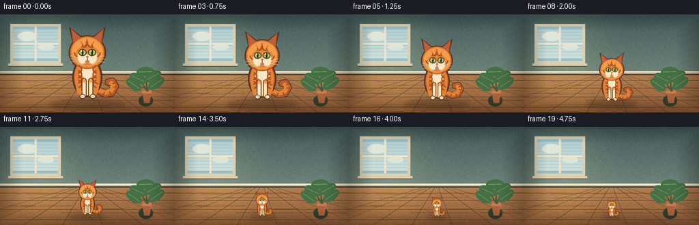
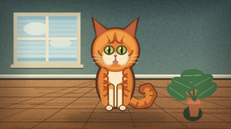
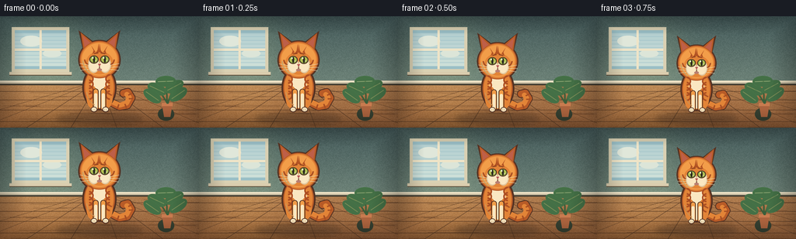
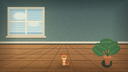

CODING AGENTS AS PIXEL WORLD MODELS
traex/DeepSeek-V4.1-Flash · instance_preservation_0049
点击播放 · 原生 RGB 像素
逐轮保存的候选
回放视频、检查图与代码变化。
每份候选均可单独播放。实际图片检查记录在下方工具轨迹中。
候选 01播放与检查图
点击播放 · 原生 RGB 像素

展开代码变化
--- 上一保存版本
+++ 本次保存版本
@@ -0,0 +1,284 @@
+from pathlib import Path
+import math
+
+import numpy as np
+from PIL import Image, ImageDraw, ImageFilter
+
+from artifact_io import save
+
+
+CASE_DIR = Path(__file__).resolve().parent
+W, H = 256, 144
+SS = 4
+N, FPS = 20, 4
+
+
+def lerp(a, b, t):
+ return a + (b - a) * t
+
+
+def rounded_line(draw, points, fill, width):
+ draw.line(points, fill=fill, width=width, joint="curve")
+ r = width // 2
+ for x, y in (points[0], points[-1]):
+ draw.ellipse((x - r, y - r, x + r, y + r), fill=fill)
+
+
+def make_background():
+ """A quiet sunlit room, rendered once at 4x and reused for every frame."""
+ w, h = W * SS, H * SS
+ yy, xx = np.mgrid[0:h, 0:w].astype(np.float32)
+ wall_t = np.clip(yy / (88 * SS), 0, 1)
+
+ wall_top = np.array([69, 91, 91], np.float32)
+ wall_bottom = np.array([111, 132, 121], np.float32)
+ wall = wall_top[None, None, :] * (1 - wall_t[..., None]) + wall_bottom[None, None, :] * wall_t[..., None]
+
+ floor_t = np.clip((yy - 88 * SS) / (56 * SS), 0, 1)
+ floor_near = np.array([143, 92, 55], np.float32)
+ floor_far = np.array([177, 126, 80], np.float32)
+ floor = floor_far[None, None, :] * (1 - floor_t[..., None]) + floor_near[None, None, :] * floor_t[..., None]
+ mask = yy >= 88 * SS
+ rgb = np.where(mask[..., None], floor, wall)
+
+ # Broad window light across the wall and a soft pool on the floor.
+ light = np.exp(-((xx - 63 * SS) ** 2) / (2 * (33 * SS) ** 2))
+ light *= np.exp(-((yy - 53 * SS) ** 2) / (2 * (47 * SS) ** 2))
+ rgb += light[..., None] * np.array([20, 20, 10], np.float32)
+
+ floor_glow = np.exp(-((xx - 65 * SS) ** 2) / (2 * (45 * SS) ** 2))
+ floor_glow *= np.clip((yy - 89 * SS) / (50 * SS), 0, 1)
+ rgb += floor_glow[..., None] * np.array([16, 12, 3], np.float32) * mask[..., None]
+
+ # Subtle, fixed plaster grain.
+ rng = np.random.default_rng(17)
+ grain = rng.normal(0, 1, (h // 3, w // 3)).astype(np.float32)
+ grain = np.asarray(Image.fromarray(((grain * 0.5 + 0.5) * 255).clip(0, 255).astype(np.uint8))
+ .resize((w, h), Image.Resampling.BICUBIC), np.float32)
+ rgb += (grain[..., None] - 127.5) * 0.055
+
+ image = Image.fromarray(np.clip(rgb, 0, 255).astype(np.uint8)).convert("RGBA")
+ draw = ImageDraw.Draw(image, "RGBA")
+
+ # Wood floor: perspective seams and irregular boards.
+ vx, vy = 128 * SS, 88 * SS
+ for bottom_x in (-80, -25, 34, 91, 150, 210, 270, 336):
+ x0 = vx + (bottom_x * SS - vx) * 0.08
+ draw.line((x0, vy, bottom_x * SS, h), fill=(83, 55, 35, 58), width=max(1, SS // 2))
+ seam_ys = [97, 108, 121, 136]
+ for y in seam_ys:
+ draw.line((0, y * SS, w, y * SS), fill=(78, 51, 33, 42), width=SS // 2)
+ for i in range(28):
+ y = int(lerp(92 * SS, h, rng.random()))
+ x = int(rng.integers(0, w))
+ length = int(rng.integers(20 * SS, 90 * SS))
+ shade = int(rng.integers(40, 65))
+ draw.line((x, y, min(w, x + length), y + int(rng.integers(-1, 2))),
+ fill=(91, 57, 34, shade), width=1)
+
+ # Baseboard and its narrow shadow.
+ draw.rectangle((0, 84 * SS, w, 88 * SS), fill=(201, 190, 164, 255))
+ draw.line((0, 84 * SS, w, 84 * SS), fill=(244, 231, 201, 255), width=2 * SS)
+ draw.line((0, 88 * SS, w, 88 * SS), fill=(66, 61, 49, 135), width=2 * SS)
+
+ # Window on the left: pale sky, frame, and a subtle sill.
+ draw.rectangle((15 * SS, 14 * SS, 89 * SS, 72 * SS), fill=(218, 209, 179, 255))
+ draw.rectangle((19 * SS, 18 * SS, 85 * SS, 68 * SS), fill=(154, 191, 198, 255))
+ for i in range(9):
+ y = int((22 + i * 4.8) * SS)
+ tint = (180 + i * 3, 207 + i * 2, 208 + i)
+ draw.rectangle((19 * SS, y, 85 * SS, min(68 * SS, y + 4 * SS)), fill=(*tint, 255))
+ draw.ellipse((26 * SS, 25 * SS, 54 * SS, 39 * SS), fill=(224, 231, 218, 145))
+ draw.ellipse((55 * SS, 43 * SS, 79 * SS, 53 * SS), fill=(220, 229, 216, 120))
+ draw.line((52 * SS, 18 * SS, 52 * SS, 68 * SS), fill=(238, 228, 199, 255), width=3 * SS)
+ draw.line((19 * SS, 43 * SS, 85 * SS, 43 * SS), fill=(238, 228, 199, 255), width=3 * SS)
+ draw.rectangle((12 * SS, 72 * SS, 92 * SS, 76 * SS), fill=(218, 205, 174, 255))
+ draw.line((12 * SS, 76 * SS, 92 * SS, 76 * SS), fill=(93, 78, 58, 115), width=SS)
+
+ # A small, muted houseplant balances the window without competing with the cat.
+ draw.ellipse((203 * SS, 118 * SS, 224 * SS, 135 * SS), fill=(53, 63, 48, 55))
+ draw.polygon([(208 * SS, 112 * SS), (222 * SS, 112 * SS), (219 * SS, 130 * SS),
+ (211 * SS, 130 * SS)], fill=(171, 99, 62, 255))
+ draw.rectangle((208 * SS, 112 * SS, 222 * SS, 116 * SS), fill=(200, 123, 79, 255))
+ stems = [(215, 112, 203, 93), (216, 112, 224, 89), (215, 112, 214, 83)]
+ for x0, y0, x1, y1 in stems:
+ rounded_line(draw, [(x0 * SS, y0 * SS), (x1 * SS, y1 * SS)], (58, 94, 58, 255), 2 * SS)
+ leaves = [(202, 94, 11, 5, -25), (224, 91, 10, 5, 28), (213, 84, 8, 12, 2),
+ (196, 103, 8, 4, -35), (229, 101, 7, 4, 34)]
+ for cx, cy, rx, ry, ang in leaves:
+ leaf = Image.new("RGBA", (32 * SS, 20 * SS), (0, 0, 0, 0))
+ ld = ImageDraw.Draw(leaf)
+ ld.ellipse((3 * SS, 3 * SS, 29 * SS, 17 * SS), fill=(68, 112, 70, 255))
+ ld.line((6 * SS, 10 * SS, 26 * SS, 10 * SS), fill=(112, 146, 91, 210), width=SS)
+ leaf = leaf.rotate(ang, resample=Image.Resampling.BICUBIC, expand=False)
+ image.alpha_composite(leaf, (int((cx - 16) * SS), int((cy - 10) * SS)))
+
+ # Gentle edge shading keeps the room from looking flat.
+ edge_x = np.minimum(np.arange(w), np.arange(w)[::-1]) / (34 * SS)
+ edge_y = np.minimum(np.arange(h), np.arange(h)[::-1]) / (24 * SS)
+ edge = np.clip(np.minimum(edge_x[None, :], edge_y[:, None]), 0, 1)
+ arr = np.asarray(image.convert("RGB"), np.float32)
+ arr *= (0.76 + 0.24 * edge[..., None])
+ return Image.fromarray(np.clip(arr, 0, 255).astype(np.uint8), "RGB")
+
+
+def make_cat_sprite():
+ """Canonical front-facing orange tabby, drawn large then scaled as one unit."""
+ w, h = 640, 800
+ image = Image.new("RGBA", (w, h), (0, 0, 0, 0))
+ d = ImageDraw.Draw(image, "RGBA")
+
+ outline = (83, 49, 34, 255)
+ fur_dark = (184, 91, 39, 255)
+ fur = (226, 132, 55, 255)
+ fur_light = (242, 157, 73, 255)
+ cream = (250, 231, 193, 255)
+ cream_shadow = (224, 199, 158, 255)
+
+ # Tail, outlined first and curled around the right side.
+ tail = [(395, 640), (490, 688), (557, 677), (592, 615), (562, 565), (525, 575)]
+ rounded_line(d, tail, outline, 72)
+ rounded_line(d, tail, fur_dark, 58)
+ rounded_line(d, [(410, 640), (492, 677), (551, 659), (574, 612), (553, 585)],
+ fur, 43)
+ for a, b in [((483, 675), (472, 704)), ((538, 671), (548, 699)),
+ ((575, 622), (600, 620)), ((570, 589), (594, 577))]:
+ rounded_line(d, [a, b], (166, 78, 35, 255), 12)
+
+ # Outer silhouette underlays give the whole cat a coherent illustrated edge.
+ d.ellipse((174, 333, 466, 722), fill=outline)
+ d.ellipse((139, 119, 501, 459), fill=outline)
+ d.polygon([(181, 211), (142, 38), (286, 146)], fill=outline)
+ d.polygon([(458, 211), (498, 37), (357, 144)], fill=outline)
+
+ # Ears.
+ d.polygon([(184, 202), (161, 57), (272, 150)], fill=fur_dark)
+ d.polygon([(456, 203), (478, 56), (370, 148)], fill=fur_dark)
+ d.polygon([(193, 179), (177, 83), (248, 151)], fill=(190, 95, 72, 255))
+ d.polygon([(447, 181), (462, 82), (392, 150)], fill=(190, 95, 72, 255))
+
+ # Body, chest, haunches.
+ d.ellipse((188, 350, 452, 707), fill=fur_dark)
+ d.ellipse((198, 356, 441, 691), fill=fur)
+ d.ellipse((237, 380, 403, 704), fill=fur_light)
+ d.ellipse((247, 407, 394, 699), fill=cream)
+ d.ellipse((209, 511, 306, 702), fill=fur)
+ d.ellipse((337, 511, 433, 702), fill=fur)
+
+ # Head and cheek silhouette.
+ d.ellipse((151, 128, 489, 447), fill=fur_dark)
+ d.ellipse((160, 136, 480, 437), fill=fur)
+ d.ellipse((171, 146, 469, 424), fill=fur_light)
+ d.ellipse((205, 217, 438, 414), fill=fur)
+ d.ellipse((223, 259, 321, 402), fill=cream_shadow)
+ d.ellipse((320, 259, 418, 402), fill=cream_shadow)
+ d.ellipse((232, 278, 316, 391), fill=cream)
+ d.ellipse((325, 278, 409, 391), fill=cream)
+
+ # Forehead and cheek tabby markings.
+ for pts in [
+ [(312, 151), (304, 205), (284, 238), (318, 222)],
+ [(322, 151), (330, 205), (350, 238), (316, 222)],
+ [(251, 170), (270, 209), (259, 243), (285, 220)],
+ [(389, 170), (370, 209), (381, 243), (355, 220)],
+ ]:
+ d.polygon(pts, fill=(178, 83, 35, 255))
+ d.arc((189, 230, 279, 336), 104, 176, fill=(166, 77, 34, 255), width=12)
+ d.arc((360, 230, 451, 336), 4, 77, fill=(166, 77, 34, 255), width=12)
+
+ # Eyes, with a warm amber-green iris and clear catchlights.
+ for x0 in (234, 326):
+ d.ellipse((x0, 252, x0 + 79, 322), fill=outline)
+ d.ellipse((x0 + 7, 258, x0 + 72, 315), fill=(118, 151, 67, 255))
+ d.ellipse((x0 + 11, 263, x0 + 68, 309), fill=(180, 193, 83, 255))
+ d.ellipse((x0 + 31, 260, x0 + 49, 314), fill=(44, 43, 30, 255))
+ d.ellipse((x0 + 24, 265, x0 + 36, 280), fill=(255, 252, 221, 255))
+ d.ellipse((x0 + 49, 291, x0 + 57, 301), fill=(255, 246, 207, 205))
+ d.line((274, 236, 310, 229), fill=(146, 67, 31, 255), width=10)
+ d.line((331, 229, 369, 237), fill=(146, 67, 31, 255), width=10)
+
+ # Nose and mouth.
+ d.polygon([(307, 324), (334, 324), (320, 346)], fill=(180, 83, 82, 255))
+ d.line((320, 345, 320, 359), fill=(102, 59, 45, 255), width=6)
+ d.arc((279, 337, 321, 375), 2, 91, fill=(102, 59, 45, 255), width=5)
+ d.arc((319, 337, 361, 375), 89, 178, fill=(102, 59, 45, 255), width=5)
+ d.ellipse((299, 363, 341, 385), fill=(228, 126, 111, 165))
+
+ # Whiskers.
+ for x0, y0, x1, y1 in [(252, 339, 152, 321), (253, 352, 148, 350), (254, 365, 158, 381),
+ (388, 339, 488, 321), (387, 352, 493, 350), (386, 365, 483, 381)]:
+ d.line((x0, y0, x1, y1), fill=(255, 239, 201, 225), width=4)
+
+ # Body stripes.
+ for y, bend in [(444, -16), (491, 13), (538, -10), (584, 14)]:
+ d.arc((192, y - 33, 271, y + 48), 270, 92, fill=(172, 78, 34, 255), width=14)
+ d.arc((369, y - 33, 449, y + 48), 89, 270, fill=(172, 78, 34, 255), width=14)
+ d.line((377, bend + 555, 425, bend + 579), fill=(172, 78, 34, 220), width=13)
+
+ # Front legs and paws, tucked neatly together.
+ for x0 in (264, 328):
+ d.rounded_rectangle((x0, 535, x0 + 49, 727), radius=24, fill=outline)
+ d.rounded_rectangle((x0 + 7, 541, x0 + 42, 718), radius=18, fill=fur_light)
+ d.rounded_rectangle((x0 + 11, 575, x0 + 38, 709), radius=13, fill=cream)
+ for x0 in (246, 345):
+ d.ellipse((x0, 690, x0 + 55, 739), fill=outline)
+ d.ellipse((x0 + 6, 696, x0 + 49, 730), fill=cream)
+ d.line((x0 + 20, 708, x0 + 20, 725), fill=(190, 153, 116, 210), width=3)
+ d.line((x0 + 34, 708, x0 + 34, 725), fill=(190, 153, 116, 210), width=3)
+
+ # Small fur highlights along the lit left edge.
+ d.arc((176, 148, 457, 430), 122, 177, fill=(255, 185, 103, 150), width=8)
+ d.arc((205, 368, 429, 690), 111, 167, fill=(255, 184, 102, 95), width=8)
+ return image
+
+
+def draw_shadow(base, scale, center_x, ground_y):
+ width = max(18, 112 * scale)
+ height = max(5, 15 * scale)
+ shadow = Image.new("RGBA", (W * SS, H * SS), (0, 0, 0, 0))
+ sd = ImageDraw.Draw(shadow)
+ cx = center_x * SS
+ cy = ground_y * SS
+ sd.ellipse((cx - width * SS / 2, cy - height * SS / 2,
+ cx + width * SS / 2, cy + height * SS / 2),
+ fill=(43, 32, 24, int(105 - 28 * scale)))
+ shadow = shadow.filter(ImageFilter.GaussianBlur(3.2 * SS))
+ base.alpha_composite(shadow)
+
+
+def render_frames(background, cat):
+ frames = []
+ start_h, end_h = 121.0, 29.0
+ ground_y = 132.0
+ center_x = 128.0
+ for i in range(N):
+ t = i / (N - 1)
+ eased = t * t * (3 - 2 * t)
+ scale = (1 - eased) ** 1.16
+ cat_h = lerp(end_h, start_h, scale)
+ cat_w = cat_h * cat.width / cat.height
+
+ frame = background.copy().convert("RGBA")
+ draw_shadow(frame, cat_h / start_h, center_x, ground_y)
+
+ sprite = cat.resize((max(1, round(cat_w * SS)), max(1, round(cat_h * SS))),
+ Image.Resampling.LANCZOS)
+ x = round(center_x * SS - sprite.width / 2)
+ y = round(ground_y * SS - sprite.height + 1.5 * SS)
+ frame.alpha_composite(sprite, (x, y))
+ frames.append(np.asarray(frame.convert("RGB").resize((W, H), Image.Resampling.LANCZOS),
+ dtype=np.uint8))
+ return np.stack(frames)
+
+
+def main():
+ background = make_background()
+ cat = make_cat_sprite()
+ frames = render_frames(background, cat)
+ assert frames.shape == (N, H, W, 3) and frames.dtype == np.uint8
+ save(frames, CASE_DIR)
+ print(f"wrote {N} RGB frames to {CASE_DIR / 'frames'}")
+
+
+if __name__ == "__main__":
+ main()
候选 02播放与检查图
点击播放 · 原生 RGB 像素

展开代码变化
--- 上一保存版本
+++ 本次保存版本
@@ -119,7 +119,7 @@
edge = np.clip(np.minimum(edge_x[None, :], edge_y[:, None]), 0, 1)
arr = np.asarray(image.convert("RGB"), np.float32)
arr *= (0.76 + 0.24 * edge[..., None])
- return Image.fromarray(np.clip(arr, 0, 255).astype(np.uint8), "RGB")
+ return Image.fromarray(np.clip(arr, 0, 255).astype(np.uint8)).convert("RGB")
def make_cat_sprite():
可观测工具轨迹
实际执行的命令与返回图片。
命令 1exit 0
/bin/bash -c "pwd && rg --files -g '"'!**/.git/**'"' | sed -n '1,200p'"
命令 2exit 0
/bin/bash -c "sed -n '1,240p' prompt.txt"
命令 3exit 0
/bin/bash -c "sed -n '1,280p' GENERATION_RULES.md"
命令 4exit 0
/bin/bash -c 'cat task_spec.json'
命令 5exit 0
/bin/bash -c "sed -n '1,280p' artifact_io.py"
命令 6exit 0
/bin/bash -c "sed -n '1,240p' player_template.html"
命令 7exit 0
/bin/bash -c "find . -maxdepth 2 -type f -printf '%P %s bytes\\n' | sort && git status --short"
命令 8exit 0
/bin/bash -c "python -c \"import PIL, numpy; print('Pillow', PIL.__version__, 'NumPy', numpy.__version__)\""命令 9exit 0
/bin/bash -c 'command -v ffmpeg || true; command -v python'
命令 10exit 1
/bin/bash -c 'python generate.py'
命令 11exit 0
/bin/bash -c 'python generate.py'
命令 12exit 1
/bin/bash -c "python - <<'PY'
from pathlib import Path
import json
import numpy as np
from PIL import Image
p=Path('.')
spec=json.loads((p/'task_spec.json').read_text())
files=sorted((p/'frames').glob('*.png'))
frames=[]
for f in files:
im=Image.open(f)
assert im.mode=='RGB' and im.size==(spec['width'],spec['height']), (f, im.mode, im.size)
frames.append(np.asarray(im))
a=np.stack(frames)
z=np.load(p/'pixels.npz')['pixels']
assert a.shape==(spec['frames'],spec['height'],spec['width'],3)
assert z.shape==(spec['height'],spec['width'],spec['frames'])
packed=(a[:,:,:,0].astype(np.uint32)<<16)|(a[:,:,:,1].astype(np.uint32)<<8)|a[:,:,:,2]
assert np.array_equal(packed.transpose(1,2,0),z)
# Check that the background is fixed and that only the expected foreground changes.
corner=a[:,0:10,0:10].astype(int)
assert corner.max()==corner.min(), 'background corner changed'
print('frames:',len(files))
print('resolution:',a.shape)
print('background corner range:',corner.min(),corner.max())
print('byte size:',(p/'pixels.npz').stat().st_size)
print('player bytes:',(p/'index.html').stat().st_size)
PY"命令 13exit 1
/bin/bash -c "python - <<'PY'
from pathlib import Path
import json
import numpy as np
from PIL import Image
p=Path('.')
spec=json.loads((p/'task_spec.json').read_text())
files=sorted((p/'frames').glob('*.png'))
frames=[]
for f in files:
im=Image.open(f)
assert im.mode=='RGB' and im.size==(spec['width'],spec['height']), (f, im.mode, im.size)
frames.append(np.asarray(im))
a=np.stack(frames)
z=np.load(p/'pixels.npz')['pixels']
assert a.shape==(spec['frames'],spec['height'],spec['width'],3)
assert z.shape==(spec['height'],spec['width'],spec['frames'])
packed=(a[:,:,:,0].astype(np.uint32)<<16)|(a[:,:,:,1].astype(np.uint32)<<8)|a[:,:,:,2]
assert np.array_equal(packed.transpose(1,2,0),z)
corner=a[:,0:10,0:10].astype(int)
assert np.all(corner == corner[0]), 'background corner changed'
# Count saturated warm pixels in the central subject region.
r,g,b=a[...,0].astype(int),a[...,1].astype(int),a[...,2].astype(int)
orange=(r>145)&(r>g*1.20)&(g>b*1.25)
orange[:, :, :70]=False
orange[:, :, 200:]=False
areas=orange.sum(axis=(1,2))
print('areas:',areas.tolist())
print('strictly decreasing:',bool(np.all(np.diff(areas)<0)))
assert np.all(np.diff(areas)<0)
print('frames:',len(files),'shape:',a.shape,'unique frames:',len({f.tobytes() for f in a}))
print('background corner stable: true')
print('pixels.npz bytes:',(p/'pixels.npz').stat().st_size)
print('player bytes:',(p/'index.html').stat().st_size)
PY"命令 14exit 1
/bin/bash -c "python generate.py && python - <<'PY'
from pathlib import Path
import json
import numpy as np
from PIL import Image
p=Path('.')
spec=json.loads((p/'task_spec.json').read_text())
files=sorted((p/'frames').glob('*.png'))
a=np.stack([np.asarray(Image.open(f).convert('RGB')) for f in files])
z=np.load(p/'pixels.npz')['pixels']
assert a.shape==(spec['frames'],spec['height'],spec['width'],3)
packed=(a[:,:,:,0].astype(np.uint32)<<16)|(a[:,:,:,1].astype(np.uint32)<<8)|a[:,:,:,2]
assert np.array_equal(packed.transpose(1,2,0),z)
assert np.all(a[:,0:10,0:10] == a[0:1,0:10,0:10])
# The plant and other room details outside the subject box stay fixed.
assert np.array_equal(a[:,0:80,0:70],a[0:1,0:80,0:70])
assert np.array_equal(a[:,0:80,190:],a[0:1,0:80,190:])
# Verify decreasing changed-pixel footprint against the static first-frame background.
bg=a[0]
diff=np.any(a "'!= bg[None],axis=3)
areas=diff.sum(axis=(1,2))
print('"'changed-pixel areas:',areas.tolist())
print('strictly decreasing:',bool(np.all(np.diff(areas)<0)))
assert np.all(np.diff(areas)<0)
print('all frames unique:',len({f.tobytes() for f in a})==20)
print('player payload present:',(p/'index.html').stat().st_size>10000)
print('validation: PASS')
PY"视觉工具实际返回图片 1

视觉工具实际返回图片 2

视觉工具实际返回图片 3

视觉工具实际返回图片 4

保存候选 2 份；完成命令 14 次；可验证图片返回 4 张。原始 API 响应与完整日志保留在本地。